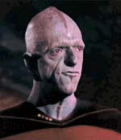
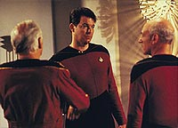
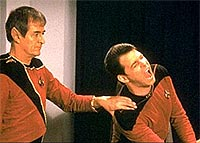
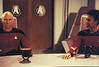
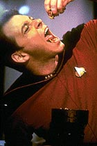

|
MANCHETE
DO EPISDIO
Conspirao
ameaa o futuro da Frota
Estelar a traz a Enterprise Terra
Episdio
anterior | Prximo
episdio
Sinopse:
Data Estelar: 41775.5.
A Enterprise est a caminho de Pacfica para uma licena quando
recebe uma mensagem por um canal de emergncia do capito Walker
Keel, apenas para Jean-Luc Picard. Nela, Keel pede um encontro
secreto com o capito, em um planeta desabitado. L, ele e mais
dois capites revelam a Picard suas suspeitas de que uma conspirao
esteja tomando conta dos altos escales da Frota Estelar.
 Assustado
pelas acusaes de Keel, Picard ordena ao tenente-comandante Data
que analise todas as ordens da Frota durante os ltimos seis meses.
A preocupao do capito da Enterprise aumenta quando a nave de
Keel misteriosamente explode, matando todos a bordo. Quando Data
revela as anormalidades encontradas em sua pesquisa, Picard se
convence de que a Federao est em risco e ordena um imediato
regresso Terra para confrontar o Comando da Frota Estelar.
Aps requisitar um encontro com os almirantes que comandam a
organizao, Picard e Riker so convidados para jantar. Na ocasio,
discutiriam as objees do capito da Enterprise. Mas antes, o
almirante Quinn, que meses atrs havia avisado Picard que elementos
subversivos haviam se infiltrado na Frota, visita a Enterprise. Os
instintos de Picard acabam se mostrando corretos: logo que ele desce
ao planeta para se reunir com os outros almirantes, Quinn ataca
Riker, deixando-o inconsciente.
 O
almirante, dotado de superfora e resistncia, finalmente
detido por Worf e pela dra. Crusher. A mdica examina Quinn e
descobre que um parasita havia invadido seu corpo e tomado o
controle de suas funes cerebrais. Quando Riker recupera a conscincia,
ele se transporta para a Terra, fingindo ser uma das pessoas
controladas por parasitas.
No jantar, Riker descobre que todo o Comando da Frota est sendo
controlado por parasitas. Felizmente, ele e Picard so capazes de
matar os almirantes infectados, assim como a criatura-me,
hospedada no corpo do tenente-comandante Remmick. Ao matar a me,
todas as outras acabaram morrendo, afastando o perigo imediato.
Entretanto, Data depois descobre que os aliengenas conseguiram
enviar um sinal para uma regio inexplorada da galxia antes de
seres destrudos, sinalizando a posio da Terra.
Comentrios:
A nica coisa que se pode verdadeiramente lamentar a
respeito da histria contada em "Conspiracy"
que, aps sete anos, ela no tenha recebido nenhuma continuao,
apesar do tremendo tom de "To Be Continued..." do final do
episdio.
 O
segmento memorvel por vrias razes. Em primeiro lugar, teve
a coragem de lidar com o corao da Frota Estelar. Segundo, levou,
pela primeira vez, a Enterprise de volta Terra, evento rarssimo
na histria da srie. Em terceiro, conseguiu colocar em seus 46
minutos um enredo complexo e bem trabalhado, com direito at a uma
belssima antecipao feita em "Coming
of Age". A meno, naquele episdio, das preocupaes
do almirante Quinn deram um contexto muito mais real a "Conspiracy",
alm de desatar o n apresentado naquela ocasio.
A histria, como de costume na primeira temporada, manda no episdio,
sem muito espao para desenvolvimento de personagens. Isso faz com
que a interao entre eles seja pobre e normalmente restrinja-se
somente a "alvio cmico", o que nesse episdio no
funciona muito bem.
As tentativas de produzir humor so exageradas e perigosamente
falsas. Por mais que seja engraadinho ver o computador da
Enterprise cansando-se da tagarelice de Data, o apelo humorstico
rompe com o senso de realismo.
Algumas tentativas de humor tambm abusaram da dignidade do
personagem, estabelecendo esteretipos perigosos. O fato de Worf no
gostar de nadar por ser muito parecido com tomar banho um desses
momentos, que destroem no s seu prprio personagem como a
reputao dos Klingons como um todo.
 Tirando
as piadinhas, no h mais reparos, em termos de roteiro, a se
fazer. A trama leva o telespectador at a borda de sua poltrona
durante todo o tempo, atingindo o auge quando Picard se v
confrontado com um delicioso prato de minhocas vivas para o jantar.
Ali temos a famosa sensao de "agora j era", at que
Riker mostra que ainda est conosco e salva o dia, para a sorte de
Jean-Luc e da Federao.
A ltima cena, pedindo desesperadamente por uma continuao
enquanto viajamos pelo espao ao som do sinal aliengena, o
melhor fim de episdio da temporada e, possivelmente, um dos
melhores da srie.
Em termos tcnicos, o episdio recebe destaques pelos cenrios do
planeta aliengena do incio do episdio e pela exploso do
tenente-comandante Remmick, espalhando miolos por todos os lados.
Mesmo assim, h elementos visuais muito mal acabados, como as
criaturas caminhando (claramente animao com massinha), ou o
bichinho entrando na boca de Remmick, claramente feito de plstico
e totalmente imvel.
 Tambm
de se estranhar que o Comando da Frota Estelar seja um lugar to
vazio e simples. No chega a ser um problema grave, mas poderia se
esperar algo mais elaborado. Muito mais incoerente ver os
almirantes (inclusive Quinn) sem a guelra no pescoo antes que a
dra. Crusher a descobrisse. Ela poderia ter sido colocada, sem
qualquer prejuzo ao mistrio (ningum ia reparar antes da prpria
Beverly). Uma pequena pisada de bola.
Apesar de todos os problemas mencionados, o enredo de "Conspiracy"
supera tudo, elevando o episdio ao pdio da primeira temporada.
Citaes:
Keel - "Where
did we first meet?"
("Onde nos conhecemos?")
Rixx - "Answer the question."
("Responda pergunta.")
Picard - "Tau Ceti III. It was a bar... rather an exotic one,
as I remember. What do I win?"
("Tau Ceti III. Em um bar... um bem extico, se bem me lembro.
O que eu ganho?")
Computador - "Direction unclear. Please repeat request."
("Ordem confusa. Por favor, repita o pedido.")
Data - "That was not a request, I was simply... talking to
myself. A human idiosyncrasy, triggered by a fascination with
particular set of facts, or sometimes brought about by senility, or
used as a means of weighing information before reaching a conclusion,
or as a--"
("No foi um pedido, eu estava simplesmente... falando
sozinho. Uma idiossincrasia humana, disparada por uma fascinao
com um grupo particular de fatos, ou algumas vezes provocada por
senilidade, ou usada como uma forma de enfatizar informaes antes
de chegar a uma concluso, ou como uma--")
Computador - "Thank you, sir, I comprehend. Please specify
how you would like to proceed, sir."
("Obrigado, senhor, eu entendo. Por favor, especifique como
gostaria de proceder, senhor.")
Trivia:
 Embora esse episdio deixe um grande gancho para uma sequncia, o
tema da conspirao aliengena no foi retomado.
Embora esse episdio deixe um grande gancho para uma sequncia, o
tema da conspirao aliengena no foi retomado.
Parte do cenrio da sala do banquete foi reutilizado na construo
dos cenrios do bar panormico (Ten-Forward), construdo durante
o intervalo entre as temporadas.
Na histria original, os conspiradores no eram aliengenas, mas
membros de uma faco dentro da Frota Estelar --todos amigos de
Picard-- que se rebelam contra a Primeira Diretriz e a complacncia
da Federao aps o tratado de paz com os Klingons. Ironicamente,
embora Gene Roddenberry tenha rejeitado a idia de mostrar um lado
obscuro da Frota Estelar, foi uma conspirao como essa que vimos
no filme "Jornada nas Estrelas VI - A Terra
Desconhecida".
Ficha
tcnica:
Histria de Robert Sabaroff
Roteiro de Tracy Torm
Direo de Cliff Bole
Exibido em 09/05/1988
Produo: 025
Elenco:
Patrick Stewart como
Jean-Luc Picard
Jonathan Frakes como William Thomas Riker
Brent Spiner como Data
LeVar Burton como Geordi La Forge
Michael Dorn como Worf
Gates McFadden como Beverly Crusher
Marina Sirtis como Deanna Troi
Wil Wheaton como Wesley Crusher
Elenco convidado:
Henry Darrow como
almirante Savar
Ward Costello como almirante Quinn
Robert Schenkkan como tenente-comandante Dexter Remmick
Ray Reinhardt como almirante Aaron
Jonathan Farwell como capito Walker Keel
Michael Berryman como capito Rixx
Ursaline Bryant como capit Tryla Scott
Episdio
anterior | Prximo
episdio
|